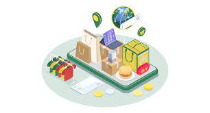

2023 Top Retail Technologies
You Should know about
As the retail industry continues to evolve and adapt to changing consumer needs, technology plays a critical role in driving growth and profitability. With the emergence of new retail technologies, retailers have the opportunity to improve the customer experience, optimize operations, and enhance overall business performance.
In this blog post, we'll explore some of the top retail technologies that are expected to gain traction in 2023 and beyond, with a particular focus on point-of-sale (POS) systems.

-
Point-of-Sale (POS) Systems
POS systems are a critical component of any retail operation, and advancements in technology are making these systems more powerful than ever before. POS systems can now integrate with other technologies such as inventory management systems and customer relationship management (CRM) software, providing retailers with a holistic view of their business.
Mobile POS systems are also becoming increasingly popular, allowing retailers to take payments anywhere in the store and reducing wait times for customers. POS systems can also incorporate AI and ML algorithms, allowing retailers to make data-driven decisions and optimize their operations

-
Blockchain
Blockchain technology has the potential to improve supply chain management and reduce fraud in the retail industry. By using blockchain technology, retailers can track products from the manufacturer to the end consumer, ensuring transparency and authenticity throughout the supply chain.
In addition, blockchain technology can be used to create loyalty programs and incentivize customers to make purchases. For example, retailers can use blockchain tokens to reward customers for their loyalty, which can then be redeemed for discounts or other perks.

-
Internet of Things (IoT)
IoT technology is becoming increasingly prevalent in the retail industry, with retailers using sensors and connected devices to improve the customer experience and optimize operations. For example, retailers can use IoT sensors to monitor foot traffic and adjust store layouts accordingly.
IoT devices can also be used to monitor inventory levels and alert retailers when products are running low. This technology can improve inventory management and reduce the likelihood of out-of-stock situations.


In conclusion, the retail industry is set to undergo significant changes in the coming years, with advancements in technology playing a critical role in driving growth and profitability. While there are many emerging technologies to keep an eye on, POS systems will continue to be a crucial component of any retail operation. By leveraging the latest POS technology, retailers can improve the customer experience, optimize operations, and stay ahead of the competition.